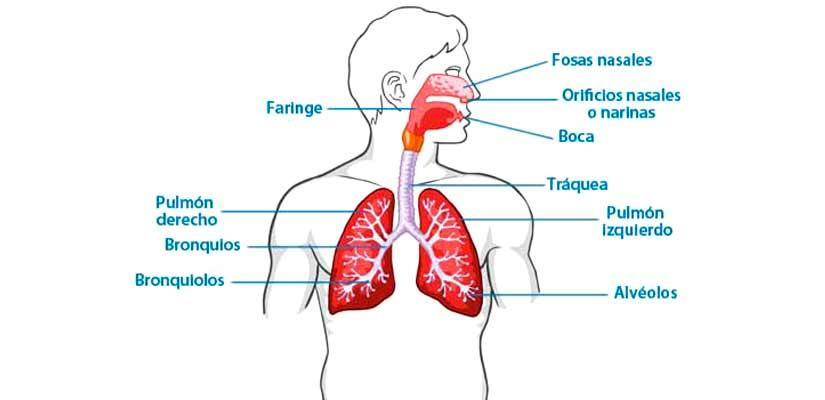

El sistema respiratorio, también llamado aparato respiratorio, está compuesto por múltiples órganos que trabajan juntos para oxigenar el cuerpo mediante el proceso de la respiración. Este proceso es posible gracias a la inhalación de aire y su conducción hacia los pulmones, en donde ocurre el intercambio gaseoso. Durante el intercambio gaseoso, el oxígeno ingresa a nuestra sangre y se intercambia por dióxido de carbono, el cual sale de nuestro cuerpo durante la exhalación.
